Braze and You


Analytics Service (Ruby)
back-end/app/services/analytics_service.rb

Segment Service (Ruby)
back-end/app/services/segment_service.rb

How do we track?

Different between Braze Track and Track
You might notice in the snippet above that we have two events for firing events. braze_track and track
We can decide which destinations Segment passes through. Braze is not enabled by default for track
When calling braze_track all that is happening is that method is calling track but deep merging the data properties and setting braze to true so Segment will pass it over
How do we identify?
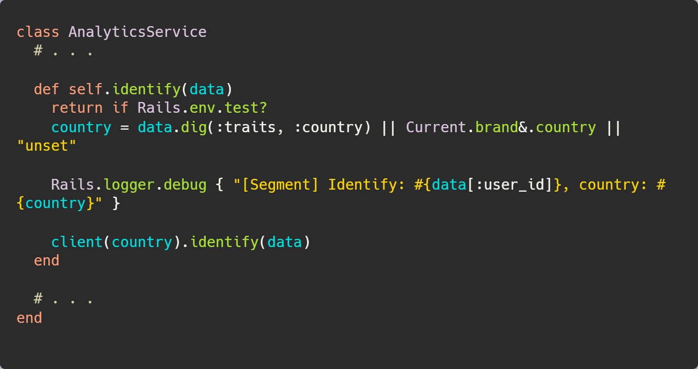
US and Canada
We’re operating in two countries with separate Segment instances, the Analytics Service handles which Segment client we use based on the country provided.


What about the front-end?
@pm/analytics
- There is trackEvent, trackAnalyticsEvent, trackPageView, and identify methods available
- This package provides Google Tag manager utilities
- This package assumes window.analytics is established from Segment front-end SDK!
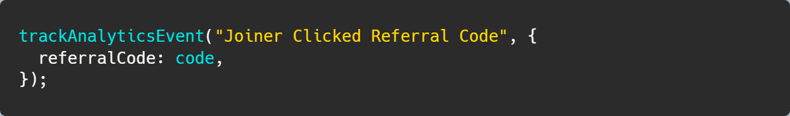 
Why do we have track Event and track Analytics Event?

Surprise! We’re using track Analytics Event within track Event
The difference here is track event is leveraging types
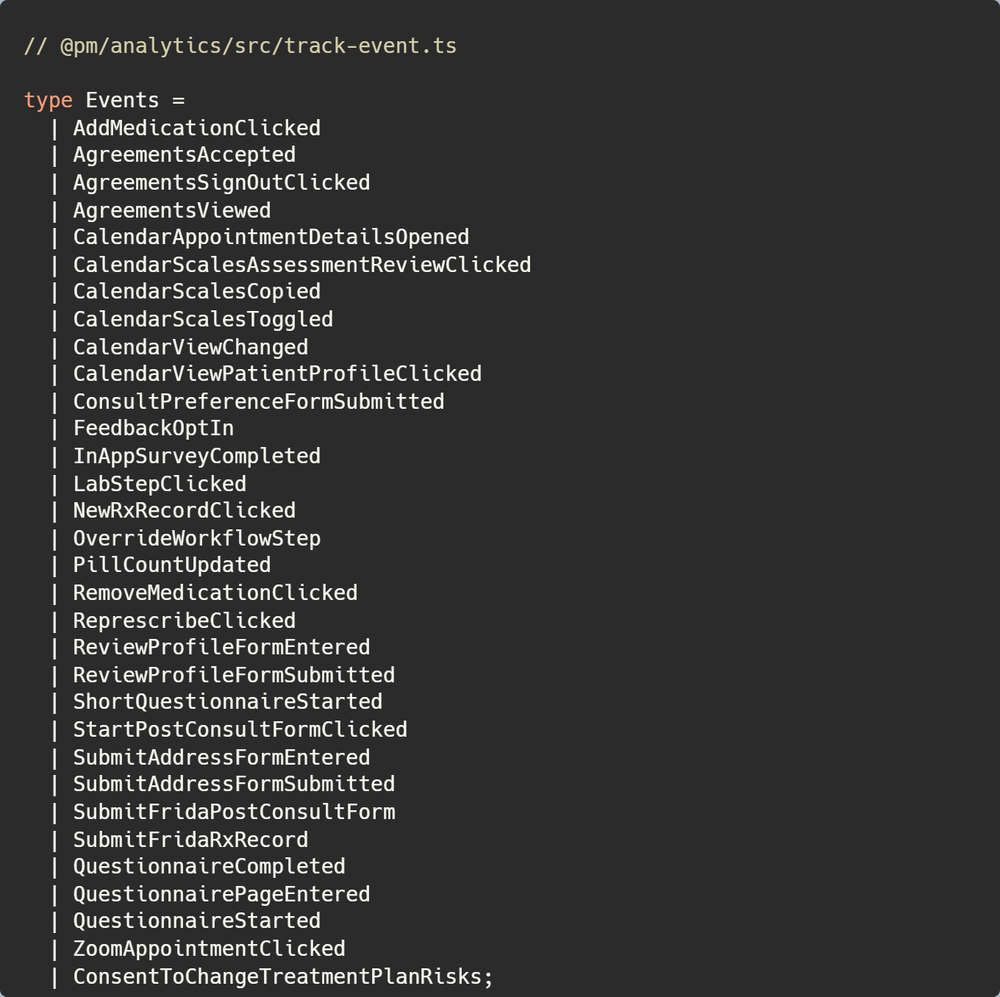
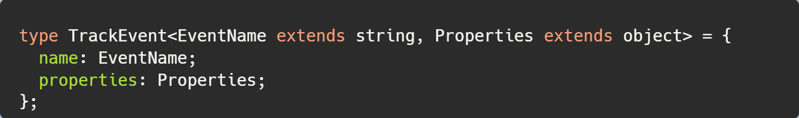 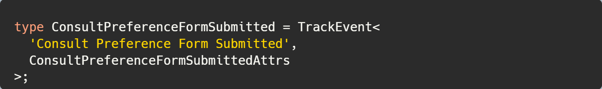
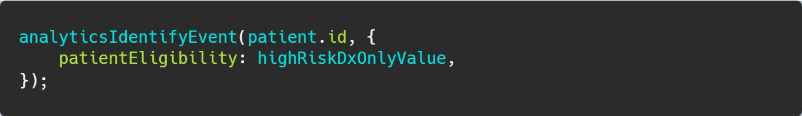
We’re not using analytics Identify much across our apps
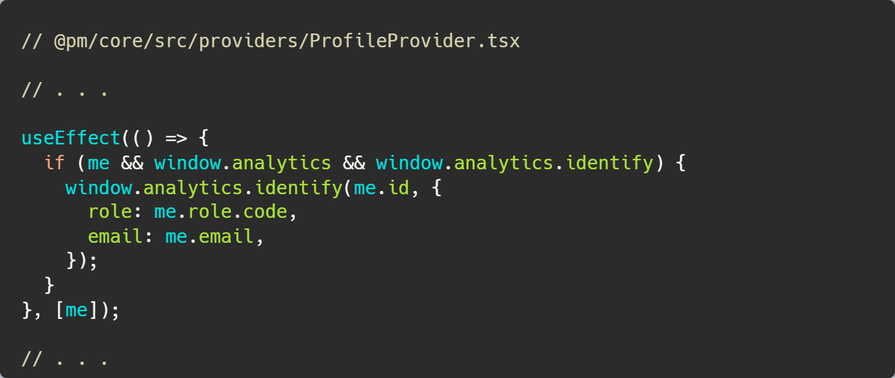
Time for a scenario
Rob is wanting to know when a patient signs an agreement
We think about this request
Rob adds some more context that for every 100 agreements signed the developers will get a free pizza party.
We are now committed to the work

We don’t need an event for this
You’re right but for this presentation let’s pretend we do need this as an event for sending a patient an email through Braze for every agreement being signed
We need to ask some questions
- Do we want all agreements being emailed to patients or just specific ones?
- What properties do you need on that event?
- Is there any other events you foresee us needing to add?
Answers are in
- We need all the agreements being emailed
- We need agreements name, the ip address, and the created at timestamp agreement to capture the version
- Nothing at the moment
Okay, let’s get started!
Let’s make an event
We need to figure out where to fire this event.

We need to fire this event in the create agreement mutation!

All done!


Wait a minute… Something is missing
Let’s write a test for this work
But we don’t want to actually be calling Segment when firing events. Let’s talk about mocks
RSpec Mocking
When writing tests in our code we can leverage mocks to isolate our tests to focus on the actual code being tested and not the state of external dependencies.
Time to test
Let’s first allow the test to receive the braze track method which will enable mocking on that method!

Now let’s run our mutation

Next, we need to do our assertions
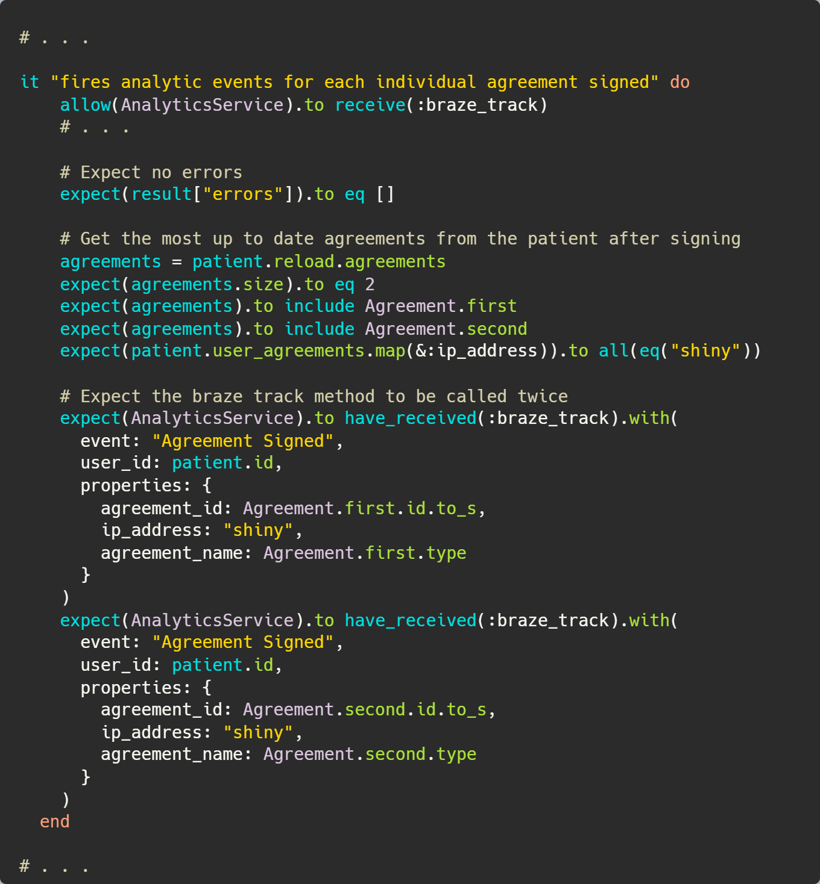
We expected the AnalyticsService to be called twice without actually calling out to Segment at all!
Let’s verify this is working!
Admin App ✅
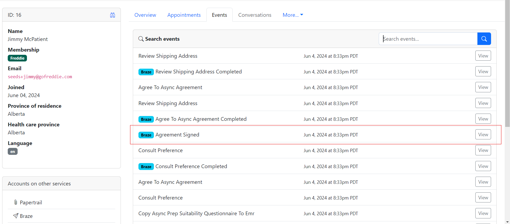
Segment
Now that we verified it is firing within our app and being stored in the events table, let’s check if it’s being sent to Segment!


Braze
Now that Segment is verified, let’s go check in on Braze and see if we’re able to see the event under the “Custom Events” box in the profile


Sudden request!
The event has been in production now for some time and a request has come up to fire an event whenever the agreement has been viewed on the front-end.
Let’s do this!
First, let’s make a typed event in track-event.ts
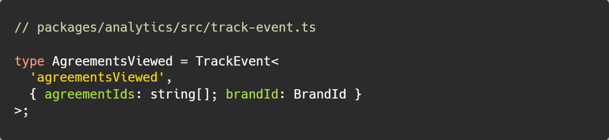

Now, let’s use this event in our app!

Now, let’s write a test for this!
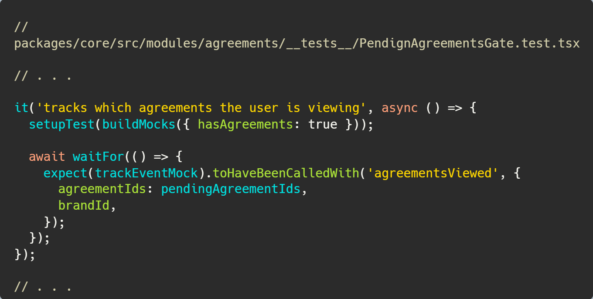
Since we don’t store these events in our Heroku database, we need to verify in Segment
The steps for verifying Segment are the same as the back-end example so I’ll spare the repetition!
Another request!
A new request has come in, we want to add a custom attribute in Braze for the number of agreements signed by the patient.
We can do this with segment traits on the user!
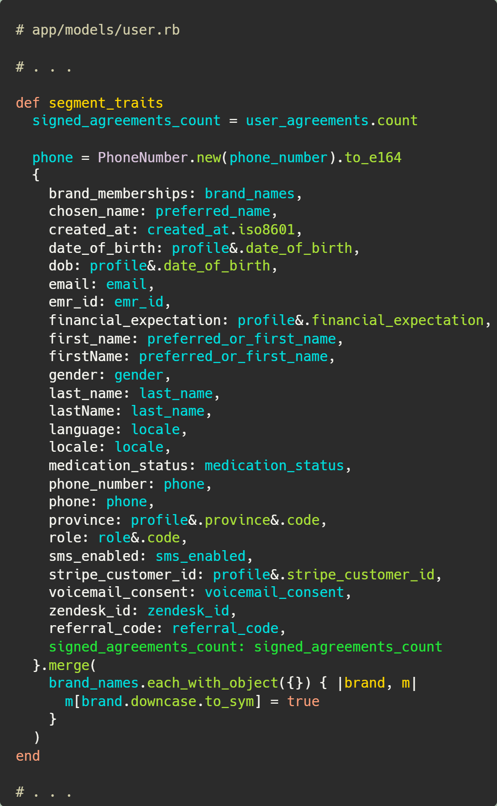
When the patient signs up or is updated this will be passed along to the Custom Attributes page in the Braze profile
Alright, we’re all good now!

Considerations you should make
Event names
It’s worth highlighting that updating event names can break reports and also cause issues in our lifecycle communications. In short, if you’re updating an existing name it’s likely you’re impacting another department!
BigQuery
Something worth highlighting is each event name we have creates a new table within BigQuery! This can make things complex for our data team. You should try to prefer generic names that can be differentiated with properties rather than unique names
For example
Shopping Cart Button Clicked could actually be Button Clicked and the property can have a “type” identifier for ShoppingCart
A Braze consideration on generic names
Generic names can be leveraged in Braze to trigger or track conversions. They however, cannot be used to segment users and populate custom data. There are options available such as webhooks to tweak the data to incorporate into Braze.
For Braze, just ensure we’re all on the same page and understand trade-offs for generic vs unique event names.
It’s likely an event will need to drill further into just triggering and conversion tracking so be sure to work closely with lifecycle on new events and existing event updates!
Recap
Segment
Segment is our CDP that our events get emitted to and then funneled to various destinations all managed through the Dashboard
Braze
Braze is our customer engagement tool that allows us to engage with a segment of patients when various events fire in our apps
Analytics Service, Segment Service, and @pm/analytics
We have AnalyticsService in our toolkit for firing events to Segment from our back-end which uses SegmentService
We have @pm/analytics on the front-end to fire front-end events that go directly to Segment and then mapped to various destinations
Track vs Braze Track
In AnalyticsService we have track and braze_track, braze_track is just calling into track but it’s passing braze as true in the properties to ensure this event goes to Braze!
Track will not send to Braze by default!
Impacts
When making updates to existing events or adding new events it’s important to inform other departments such as marketing, ops, and data.
If you’re updating an existing event you’re likely going to cause an issue downstream so be sure to coordinate!
When adding new events, coordinate with other teams to ensure the event makes sense for their workflows and be on the same page!
Thanks, any questions?